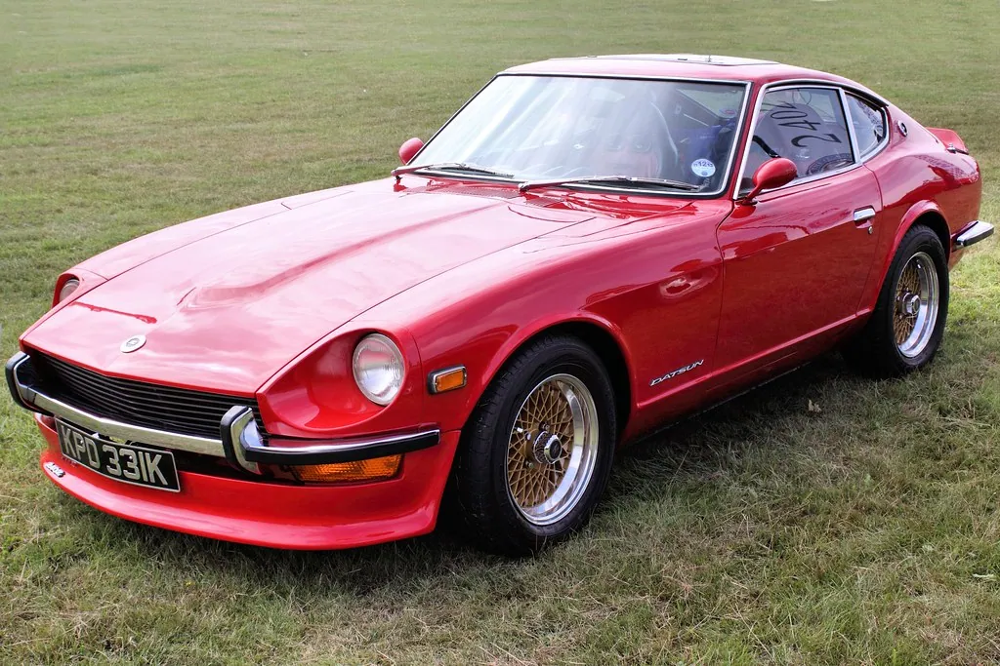

The Car Show Guide
A classic car show is the friendliest gathering you will ever attend. Here is how to enjoy your first one, how to show a car of your own, the golden rules of etiquette, and how judging really works.

Attending your first show
A classic car show is one of the friendliest gatherings you will ever attend. Whether it is a formal judged event, a casual weekend cruise-in at a diner, or a charity fundraiser in a parking lot, the welcome is warm and the admission is often free or a few dollars for a good cause. You need bring nothing but comfortable shoes, a hat, and a willingness to strike up a conversation.
What you'll need
- Comfortable walking shoes and sun protection
- A folding chair, if it is a cruise-in style event
- A little cash for food, a raffle, or a club donation
- Plenty of time — these events are for lingering
Arrive early if you can, when the cars are rolling in and the light is good, and simply wander. Take your time, look closely, and do not be shy about asking an owner a question — which brings us to the single most important thing to know.
Show etiquette: the golden rules
Car folk are a welcoming bunch, and a few simple courtesies keep every show pleasant for all.
- Look with your eyes, not your hands. Never touch a car without the owner's clear invitation. A fingerprint on polished paint, or worse a scratch from a belt buckle or zipper, is a real heartbreak to an owner who spent hours detailing it.
- Mind the children. Keep little ones close and hands behind backs; most owners adore sharing their cars with youngsters, but only safely.
- Ask before you photograph people, though the cars themselves are fair game and owners love to see them admired.
- Strike up a conversation. "Tell me about your car" is the magic phrase; owners are usually delighted to share the story, and you will learn a great deal.
- Do not lean, sit, or set a drink on any car. Treat every vehicle as the treasured possession it is.
Tip: The owners are the real experts, and almost all of them love to talk. A genuine question about a car's history or restoration is the start of many a lasting friendship in this hobby.
Showing your own car
If you decide to bring your own classic, showing it is a joy and far less daunting than it looks. You do not need a flawless, trailer-queen restoration; honest, well-loved drivers are welcome at most events and often the most interesting cars there.
- Register in advance if the event asks for it, and arrive in good time for set-up.
- Give the car a thorough wash and detail beforehand — clean is more than half the battle.
- Bring a soft cloth to wipe off dust and fingerprints during the day.
- Set out a small information card on the windshield with the year, make, model, and a few notes about the car; visitors love to read it.
- Relax and enjoy the company; the point is the shared pleasure, not a trophy.
How judging works (in plain terms)
At a judged show, you may wonder how the awards are decided. The details vary by event, but the ideas are consistent. Judges typically evaluate cars within classes — grouped by era, type, or make — so a 1930s sedan is not competing directly against a 1960s sports car.
Within a class, judges look at factors such as the quality and correctness of the restoration, the condition of the paint, chrome, interior, and engine bay, and overall cleanliness and presentation. Some shows reward originality — how faithful the car is to how it left the factory — while others welcome tasteful modifications. Many casual events skip formal judging entirely in favor of friendly "people's choice" voting, where attendees simply pick their favorites. Whatever the format, a wise showgoer remembers that the ribbons are the least important part of a good day.
The many kinds of show
"Car show" covers a wonderful variety of events, and knowing the types helps you find the ones you will most enjoy. The judged show is the most formal, with cars entered in classes and awards given for quality and authenticity; these draw the finest restorations and are a feast for the eyes. The cruise-in is the casual cousin — an informal gathering, often weekly, with no judging and a come-as-you-are spirit.
Then there are charity shows, which pair the hobby with a good cause; marque-specific meets devoted to a single make, where the knowledge runs deep; and the grand concours events, where the rarest and most valuable cars are shown to exacting standards. For a newcomer, a local cruise-in or a general all-makes show is the friendliest starting point. Larger and more specialized events are a joy to work up to as your interest grows.
Bringing the whole family
A car show is one of the finest family outings there is, spanning every generation with ease. Grandparents find the cars of their youth and a flood of fond memories. Grandchildren, who have never known a world of chrome and tailfins, are wide-eyed at machines so unlike anything on the road today. And in between, there is common ground for everyone — the sheer spectacle of so much color and craft gathered in one place.
To make it a success with little ones, go early before the heat and the crowds, bring water and snacks, and set a loose plan with a meeting point in case anyone wanders. Many shows lay on food, music, and raffles that keep children happily occupied, and most owners light up at a child's curiosity about their car. A day at a show can plant a love of these machines that lasts a lifetime — and there are few better gifts to pass down than a shared enthusiasm that bridges the generations with such easy, happy common ground.
Cruise-ins and clubs
Beyond the big annual shows lies the heart of the hobby: the weekly cruise-in. On a warm evening, a diner parking lot or a town square fills with classics, and owners and admirers gather for a few easy hours of looking, talking, and remembering. There is no judging, no pressure, and often a jukebox or a band. It is the most relaxed and welcoming way into the hobby there is.
If you catch the bug, consider joining a local classic-car club. Clubs organize shows and cruises, share invaluable knowledge and spare parts, and become genuine communities of friends. Many welcome members who do not even own a classic yet — enthusiasm is the only real requirement. Ask at any cruise-in and someone will happily point you to the local group.
A simple show-day checklist
Whether you are attending or showing, a little preparation makes for a far better day. Here is a gentle checklist to run through the night before.
- Check the weather and dress for it — layers, a hat, sunscreen, and comfortable shoes for a day on your feet.
- Pack a folding chair, water, and a few snacks, as the best shows reward a long, unhurried stay.
- Bring a little cash for food, a raffle, or a club donation, as not everywhere takes cards.
- If showing, wash and detail the car the day before, and bring a soft cloth and your information card.
- Note the start time and arrive early, when the light is best and the cars are rolling in.
Tip: A small notebook or your phone is handy for jotting down the cars you loved and the owners you met. Many a lasting friendship in this hobby began with a swapped phone number at a show.
Getting more involved
Once the hobby has you, there are many happy ways to deepen your involvement beyond simply attending. Volunteering at a local show — directing parking, helping with registration, or running the refreshment stand — is a wonderful way to meet people and give back to a community that gives so much pleasure. Clubs always need willing hands, and the volunteers are often the ones who have the most fun and make the firmest friends.
You might also consider helping to organize a cruise-in, mentoring a newcomer, or sharing your knowledge with young people who show an interest. Passing the enthusiasm to the next generation is perhaps the most valuable thing any of us can do for the hobby's future, and it costs nothing but a little time and warmth. The classic-car world runs on exactly this kind of generosity, and there is a deep satisfaction in being part of keeping it alive and welcoming.
Make a day of it
The finest car shows reward an unhurried approach. Pack a picnic or plan to enjoy the food trucks, bring friends or grandchildren who might catch the spark, and give yourself the whole afternoon. Chat with the owners, admire the details, enjoy the music, and let the memories the cars stir up wash over you. You will go home tired, happy, and already looking forward to the next one — which, in this hobby, there always is, somewhere down the road on a fine weekend. And if a particular car has you dreaming of a project of your own, the Restoration Basics guide will help you think it through with clear eyes.